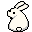
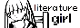

About
"In command of fifty thousand words, capable even of creating new words and telling the world to give them substance... She was a literature girl on an entirely different level."
— Kodama Maria Bungaku Shuusei
Although reading has been a passion of mine for as long as I can remember, I have found that there aren't usually many people around me who are particularly interested in hearing about it. This website is an attempt at sharing that passion, whilst also learning more about rudimentary web development. Here, I share short articles inspired by what I have been reading (or other topics I wish to discuss) and my book reviews. Infrequently, I share other projects of mine, such as art projects.
I believe that writing about or discussing the media that one consumes helps them to avoid mindless consumption. In a world where this kind of unthinking state is so commonplace, this website is a tiny way I try to avoid that particular pitfall.
Here are some other quick facts about me:
- I am an undergraduate theology student and I work in a theological bookstore;
- My favourite things to read are philosophical and theological non-fiction books, and C.S. Lewis is my favourite author;
- I love sad music and lyricism, and my favourite album is Hospice by The Antlers;
- One of my key interests is holistic, natural healthcare and I like writing about it here;
- Some of my favourite video games are Tetris, Zelda, TES (Oblivion and Skyrim), Stardew Valley, and Persona;
- I am passionate about FOSS, digital privacy, and individual expression through platforms such as personal sites rather than standardised social media profiles.
I'm not very fond of how other social media platforms function due to their lack of individuality and their insistence on short-form content, so I see Neocities as a kind of refreshing refuge.

The website name is inspired by one of my favourite mangas, Kodama Maria Bungaku Shuusei. It explores literature through the eyes of someone who truly loves it, and all of its little facets. It's a brilliant testament to the beauty of literature.
The manga screenshots shared throughout the pages on my site are all from either 児玉まりあ文学集成 (Kodama Maria Bungaku Shuusei) or シメジ シミュレーション (Shimeji Simulation), both of which I recommend highly.
site profile: neocities.org/site/literaturegirl
email: literaturegirl [at] protonmail.com
credit to the person who stopped me from bashing my head into the wall during css difficulties: oddduck
